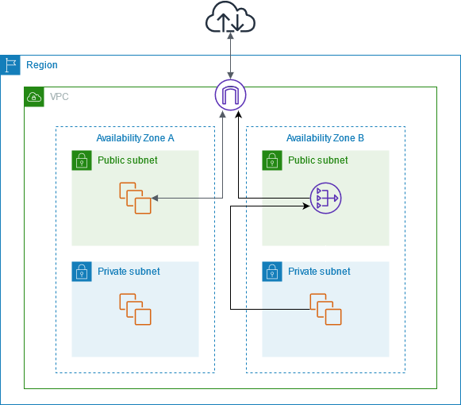
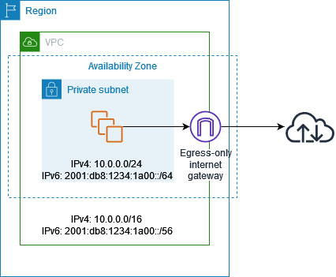
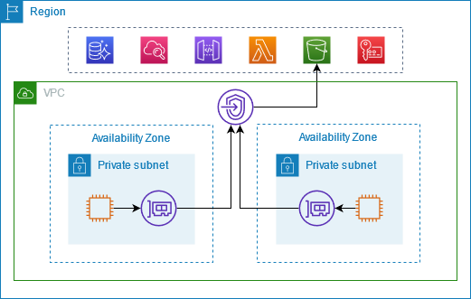
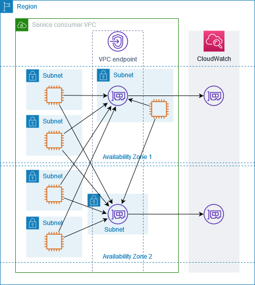
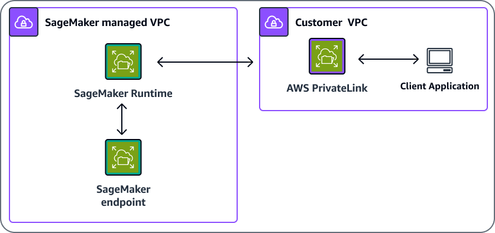
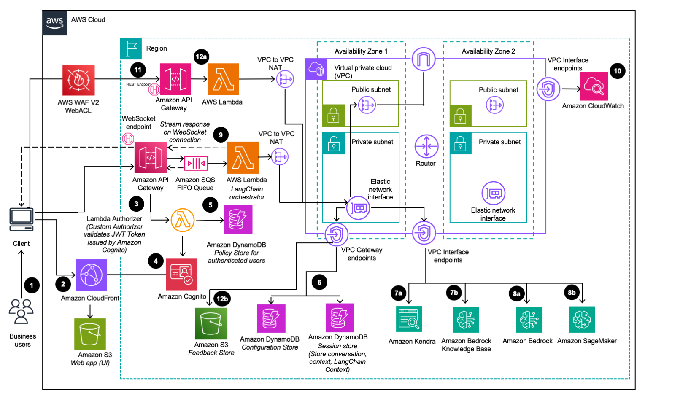

Networking for generative AI designs
After this module, you can read a long scenario about networking for a generative AI design. You can find the one constraint that decides the answer. You can then reject each wrong option with one reason. Most network questions in this area turn on three points. Where does the caller run? Does the call need a public path or a private path? Which data crosses the boundary, and who is allowed to use it?
boundary"] N3 -->|then| N4["Who may use the data"] N4 -->|reject the rest| N5["One constraint decides the
answer"]
Figure: Three questions narrow the answer before the one deciding constraint is chosen.
The deciding constraint
Start at the caller, not at the service. The caller location tells you whether a VPC route, an endpoint, or a public path is possible at all. Then look at what the request must reach. Stop at the first branch that the scenario settles. Each later branch only refines the answer.
scenario"] -->|Outside AWS| B["Public endpoint or Direct
Connect"] A -->|Inside a VPC| C["Subnet type in scenario"] A -->|Managed by AWS
without VPC| D["Service managed networking"] C -->|Private subnet and
no NAT| E["Endpoint needed for each
AWS service"] C -->|Public subnet with
IGW route| F["Public path to internet"] E -->|Bedrock model calls| G["bedrock-runtime interface
endpoint"] E -->|Agent or knowledge
base calls| H["bedrock-agent-runtime
endpoint"] E -->|S3 or DynamoDB
objects| I["Gateway endpoint in route
table"] E -->|Other AWS APIs| J["Interface endpoint with
private DNS"]
Figure: first branch of the deciding constraint tree, from caller to endpoint type.
model| C["SageMaker AI runtime
endpoint"] A -->|Custom code in a
function| D["Lambda attached to a VPC"] A -->|Vector search for
retrieval| E["Private vector store
access"] A -->|Files or objects| F["S3 with gateway endpoint"] A -->|Data in an
on-premises site| G["Direct Connect or VPN path"] B -->|Converse or
InvokeModel| H["Interface endpoint
bedrock-runtime"] D -->|Needs Bedrock or AWS
APIs| I["Endpoints or NAT in same
VPC"] E -->|OpenSearch
Serverless| J["Network policy with VPC
endpoint"] G -->|Many VPCs| K["Transit Gateway hub"]
Figure: second branch, from the requested target to the network component.
Use these signal words to pick a branch quickly.
- "private subnet", "no internet gateway", "no NAT": interface or gateway endpoints for each AWS call.
- "must not use the internet", "private access only": PrivateLink, a private API, an endpoint policy, or a network policy.
- "data center", "on-premises", "hybrid": Direct Connect or VPN, Transit Gateway, and Route 53 Resolver.
- "timeout", "hangs", "no response": a missing route, a missing endpoint, or a DNS record.
- "knowledge base", "vector index", "retrieval": an OpenSearch Serverless network policy or a private database.
- "notebook", "training job", "no outbound access": SageMaker AI VPC mode and its endpoints.
- "one Availability Zone fails", "resilient": resources and NAT gateways in each Availability Zone.
- "data residency", "stay in one geography": a geographic cross-Region inference profile, not a global one.
- "same design in production", "promote from QA": separate VPCs or accounts with their own endpoints and routes.
VPC basics for AI workloads
What it is. A VPC is a private network that you define in one AWS Region. You split its IP address range, the CIDR block, into subnets. A subnet exists in one Availability Zone. A route table tells each subnet where to send traffic for each destination.
Figure: A VPC is split into subnets, and the route table decides whether a subnet is public or private.
The Sundog course slides call a VPC a regional resource and a subnet an Availability Zone resource. A public subnet has a route to an internet gateway. A private subnet has no such route. The route table decides which kind a subnet is. The subnet name does not decide it.
Rule: Put model callers, Lambda functions, and SageMaker AI jobs in private subnets when they need no inbound traffic from the internet.
Rule: Spread subnets for each tier across at least two Availability Zones.
When not to choose. Do not place a private backend in a public subnet only to reach an AWS service. The public route adds an internet path, and the scenario may forbid one.
Trap: A subnet named public does not give Lambda internet access. The Lambda documentation says a function attached to a public subnet gets no internet access and no public IP address.
Pairs with. NAT gateways, VPC endpoints, and security groups.
Limits and numbers. The Sundog slides state that a private subnet is not reachable from the internet. The allowed VPC CIDR size range is Not in source for this module. Check the VPC quota page before you choose a size.
Source: https://docs.aws.amazon.com/vpc/latest/userguide/vpc-nat-gateway.html, https://docs.aws.amazon.com/lambda/latest/dg/configuration-vpc.html, and the Sundog course slide extract (VPC and Subnets slides).
Internet gateway
What it is. An internet gateway connects a VPC to the internet. The NAT gateway documentation shows the internet gateway mapping a private IPv4 address to an Elastic IP address. A route table sends internet-bound traffic to the internet gateway. Other internet gateway behavior is Not in source for this module.
Figure: An internet gateway serves clients that must reach a resource, and NAT serves private outbound traffic.
Rule: Choose an internet gateway for a public load balancer or public front door that clients on the internet must reach.
When not to choose. Do not give a private model caller or a private retrieval backend an internet route. A private workload that only needs outbound access uses a NAT gateway instead.
Trap: Attaching an internet gateway to a VPC that has only a private NAT gateway does not help. The internet gateway drops traffic that a private NAT gateway routes to it.
Pairs with. Public subnets, NAT gateways, and load balancers in public subnets.
Source: https://docs.aws.amazon.com/vpc/latest/userguide/vpc-nat-gateway.html and https://docs.aws.amazon.com/vpc/latest/userguide/nat-gateway-basics.html
NAT gateway
What it is. A NAT gateway lets instances in private subnets start outbound connections. Responses return, but external services cannot start a connection to those instances. A public NAT gateway sits in a public subnet and has an Elastic IP address. A private NAT gateway has no Elastic IP address and routes to other networks through a transit gateway or virtual private gateway.
connection"] N2 -->|private NAT| N5["Transit or virtual private
gateway"]
Figure: A NAT gateway lets private instances start outbound connections, and replies return to them.
Each NAT gateway is created in one Availability Zone. If resources in other zones share it and its zone fails, those resources lose internet access. The fix is one NAT gateway in each zone, with routes that keep each zone on its own gateway.
The figure below shows the layout. Only the private subnet in zone B has a route to the NAT gateway in that zone. The private subnet in zone A has no route in this picture. That gap is what a per zone design closes.

The image places the internet gateway at the top of the VPC. The NAT gateway sits in the public subnet of zone B. Traffic from the private subnet in zone B goes to the NAT gateway, and the NAT gateway forwards it to the internet gateway. Zone A has no NAT route in this picture, so its private resources have no outbound path.
Limits and numbers. A NAT gateway scales from 5 Gbps up to 100 Gbps. Each IPv4 address supports up to 55,000 simultaneous connections to one destination. The default limit is 2 Elastic IP addresses for a public NAT gateway. You cannot attach a security group to a NAT gateway. A NAT gateway is charged hourly plus a charge for each gigabyte processed. The exact rates are Not in source for this module. The per zone NAT quota number is Not in source for this module.
NAT data processing cost. The pricing page advises two options. Keep resources in the same zone as their NAT gateway, or create a NAT gateway in each zone that has resources. If most NAT traffic goes to AWS services that have endpoints, create the endpoints. Endpoints keep that traffic off the NAT gateway.
Rule: Use a NAT gateway for private workloads that call public third-party APIs or public package sources.
Rule: Do not send AWS service calls through NAT when an endpoint for that service exists.
When not to choose. A NAT gateway is the wrong answer when the scenario forbids any internet path. It is also the wrong answer for a service that has an endpoint and only needs AWS network access.
Trap: A NAT gateway makes Bedrock calls work from a private subnet. The calls still leave the VPC through the internet path, and the data processing charge applies. A scenario that asks for no internet path rejects this option.
Pairs with. Public subnets, the internet gateway, route tables per zone, and VPC endpoints that remove traffic from NAT.
Source: https://docs.aws.amazon.com/vpc/latest/userguide/vpc-nat-gateway.html, https://docs.aws.amazon.com/vpc/latest/userguide/nat-gateway-basics.html, https://docs.aws.amazon.com/vpc/latest/userguide/nat-gateway-pricing.html, and https://docs.aws.amazon.com/vpc/latest/userguide/nat-gateway-scenarios.html
Egress-only internet gateway
What it is. An egress-only internet gateway allows outbound IPv6 traffic from a VPC to the internet. It prevents the internet from starting an IPv6 connection to those instances. A route for ::/0 in the subnet route table sends internet-bound IPv6 traffic to it. There is no charge for the gateway itself, but data transfer charges apply.
IPv6"] -->|default route| N2["Egress only internet
gateway"] N2 -->|outbound only| N3["Internet"] N2 -->|blocks new inbound| N4["No new inbound IPv6
connections"] N1 -->|IPv4 traffic| N5["NAT gateway fits instead"]
Figure: The egress only gateway handles outbound IPv6, while IPv4 private egress needs a NAT gateway.
The figure shows a private subnet with IPv4 and IPv6 blocks. The subnet sends traffic to the egress-only gateway, and the gateway forwards it to the internet. New inbound IPv6 connections from the internet do not reach the subnet.

The picture shows one zone, one private subnet, and one gateway. Traffic leaves the subnet on the IPv6 route and goes to the internet cloud. Replies return on the same path. The gateway does not filter by security group, so the network ACL on the subnet controls the traffic.
Rule: Choose an egress-only internet gateway when IPv6 workloads need outbound internet access and must not accept new inbound connections.
When not to choose. Do not choose it for IPv4 traffic. The documentation says NAT gateways handle outbound-only IPv4 access.
Trap: An egress-only internet gateway does not fix IPv4 private egress. It handles IPv6 only. The scenario may have IPv4 traffic that still needs a NAT gateway.
Pairs with. Dual-stack subnets. Lambda outbound IPv6 needs every connected subnet to be dual-stack.
Source: https://docs.aws.amazon.com/vpc/latest/userguide/egress-only-internet-gateway.html and https://docs.aws.amazon.com/lambda/latest/dg/configuration-vpc.html
Interface endpoints (AWS PrivateLink)
What it is. An interface endpoint creates endpoint network interfaces in the subnets you choose. Traffic to the service enters through those private IP addresses. The connection needs no internet gateway, NAT device, VPN, or Direct Connect connection. AWS PrivateLink powers the endpoint.
API"] -->|must avoid internet| N2["Interface endpoint"] N2 -->|network interfaces| N3["Private IP addresses"] N3 -->|reaches| N4["AWS service"] N2 -->|no internet path| N5["No gateway NAT VPN or
Direct Connect"]
Figure: An interface endpoint gives a private subnet a path to an AWS service with no internet gateway.
Use the service name for each API you call. Bedrock lists these endpoint names: bedrock for control plane actions, bedrock-runtime for model runtime actions, bedrock-agent for build-time agent actions, and bedrock-agent-runtime for agent runtime actions. Bedrock also lists bedrock-mantle, which covers Mantle actions. The purpose of bedrock-mantle beyond its name is Not in source for this module.
SageMaker AI supports interface endpoints for the SageMaker API and for the SageMaker AI Runtime. Studio in VPC-only mode also needs endpoints for S3, Service Catalog for projects, STS, and CloudWatch Logs for remote training jobs. The service suffixes for Secrets Manager and KMS are Not in source for this module. Confirm them in the endpoint list for your Region.
The first figure shows two private subnets in two zones. Each subnet reaches the service through an endpoint network interface. The service runs in the Region at the top.

The image shows the endpoint as a single shield icon above the subnets. Each compute resource in a private subnet sends traffic into the endpoint. The endpoint then carries the call to the AWS service icons in the Region. No internet gateway appears in the path.
The second figure shows how one endpoint spans zones. The endpoint places a network interface in each zone.

The picture shows two zones, each with its own subnet and endpoint. Arrows cross between the zones. Client subnets in both zones can use either endpoint. Each endpoint then sends traffic on to the service. Bedrock documentation states that its endpoints are available in multiple Availability Zones.
Rule: Choose an interface endpoint when a private subnet calls an AWS API and must not use the internet.
Rule: Create one endpoint for each API surface that the code calls.
When not to choose. Do not choose an interface endpoint for S3 or DynamoDB only when a gateway endpoint does the job. Interface endpoints have an extra charge, while the S3 gateway endpoint has none.
Trap: The runtime endpoint does not cover agent calls. Bedrock lists a separate name for agent runtime. A design that calls agents needs that endpoint too.
Pairs with. Private subnets, security groups on the endpoint, endpoint policies, and private DNS.
Source: https://docs.aws.amazon.com/bedrock/latest/userguide/vpc-interface-endpoints.html, https://docs.aws.amazon.com/sagemaker/latest/dg/interface-vpc-endpoint.html, https://docs.aws.amazon.com/sagemaker/latest/dg/studio-notebooks-and-internet-access.html, https://docs.aws.amazon.com/vpc/latest/privatelink/privatelink-access-aws-services.html, https://docs.aws.amazon.com/vpc/latest/privatelink/vpc-endpoints-s3.html
Gateway endpoints for S3 and DynamoDB
What it is. A gateway endpoint is a route table target, not a network interface. It lets a VPC reach S3 without an internet gateway or NAT device. It has no additional charge. A gateway endpoint works only in the Region where you create it. The same gateway model applies to DynamoDB. The DynamoDB page was not fetched for this module, so DynamoDB specifics are Not in source.
DynamoDB"] -->|route table target| N2["Gateway endpoint"] N2 -->|no extra charge| N3["Private route to S3 or
DynamoDB"] N2 -->|only in its Region| N4["Works in one Region"] N1 -->|hybrid or peered| N5["Interface endpoint instead"]
Figure: A gateway endpoint is a route table target for S3 or DynamoDB, and other callers need an interface endpoint.
Rule: Choose a gateway endpoint for S3 or DynamoDB traffic from a VPC when no on-premises or peered network needs the same path.
What it pairs with. Route tables, the S3 prefix list in security group rules, and endpoint policies. You cannot reference a prefix list in a network ACL rule. A network ACL needs the S3 IP address range instead.
When not to choose. A gateway endpoint does not extend to on-premises networks, peered VPCs, transit gateways, VPN connections, or Direct Connect. For those callers, use an interface endpoint.
Trap: A gateway endpoint does not give Bedrock or SageMaker AI a private path. It covers S3 and DynamoDB only.
Trap: A hybrid user cannot reach S3 through a gateway endpoint. Use an interface endpoint with private DNS and a resolver path for that user.
Limits and numbers. The S3 documentation states a default quota of 20 gateway endpoints per Region, adjustable, and a limit of 255 gateway endpoints per VPC. Changing the endpoint can reset open TCP connections to S3.
Source: https://docs.aws.amazon.com/vpc/latest/privatelink/vpc-endpoints-s3.html and the Sundog course slide extract (S3 Access Points slides, which say the endpoint policy must allow the target bucket and access point).
Endpoint policies and private DNS
What an endpoint policy is. An endpoint policy is an IAM resource attached to an interface endpoint. It names the principals, the actions, and the resources that may use the endpoint. The default policy allows full access through the endpoint. A custom policy narrows that access. The Bedrock documentation gives an example that allows only InvokeModel and InvokeModelWithResponseStream.
endpoint"] N1 -->|custom policy| N3["Names principals actions
and resources"] N3 -->|narrows access| N4["Only listed callers pass"] N3 -->|restrict only| N5["Never grants new
permissions"]
Figure: A custom endpoint policy restricts the path and is not used to grant new permissions.
What private DNS is. When you enable private DNS, the default Regional service name resolves to the endpoint. Code needs no change. When private DNS is off, the SDK must use an endpoint URL that contains the endpoint ID. The Bedrock examples pass that URL to the client constructor.
Rule: Add a custom endpoint policy when the scenario limits which roles or models can call through the endpoint.
Rule: Enable private DNS when the code should keep the default service name.
When not to choose. Do not use an endpoint policy to grant new permissions. Use it to restrict the path. The fetched pages do not state the full evaluation order between endpoint policies and IAM policies. That detail is Not in source for this module.
Trap: Private DNS is off, and the code uses the default Regional name. The call goes to the public name. Without NAT or another route, the call fails or times out.
Pairs with. Interface endpoints, IAM roles, and the Route 53 Resolver.
Source: https://docs.aws.amazon.com/bedrock/latest/userguide/vpc-interface-endpoints.html
SageMaker AI in a VPC
What it is. The SageMaker API and SageMaker AI Runtime support interface endpoints through AWS PrivateLink. A client in a VPC reaches the runtime without an internet gateway, NAT device, VPN, or Direct Connect. The runtime endpoint must be active in the zone of the client for private DNS to resolve.
internet"] -->|choose| N2["VPC only Studio"] N2 -->|private subnets| N3["Private subnets"] N2 -->|endpoints or NAT| N4["SageMaker API and runtime
endpoints"] N1 -->|default Studio| N5["S3 and CloudWatch via
internet gateway"]
Figure: VPC only Studio needs private subnets and endpoints, while default Studio uses an internet gateway.
By default, Studio gets a network interface in a VPC that SageMaker AI manages. Traffic to S3 and CloudWatch from that default setup goes through an internet gateway. The VPC you name holds only the domain traffic between Studio and the EFS volume.
VPC-only Studio. VPC-only mode needs private subnets only. Notebooks run only when the VPC has interface endpoints to the SageMaker API and runtime, or a NAT gateway with internet access. Security groups must allow NFS on TCP 2049 to EFS and TCP inside the group for ports 8192 to 65535. Use one security group for each user profile. Plan two to four IP addresses per user in the subnets.
The figure shows the runtime inside a SageMaker AI managed VPC. The customer VPC reaches it through PrivateLink. The request does not use the public internet.

The picture has two boxes. The left box is the SageMaker managed VPC with the runtime and the endpoint. The right box is the customer VPC with the PrivateLink connector and the client application. Arrows show the request going from the client to the runtime and back. No internet gateway appears in the picture.
Training and processing jobs. The job setting that places a training or processing job inside your VPC is Not in source for this module. Confirm the job network settings in the SageMaker AI API reference.
Network isolation mode. The SageMaker documentation has a topic named Run Training and Inference Containers in Internet-Free Mode. The fetched page did not render, so the exact calls that this mode blocks are Not in source. Inter-container traffic encryption is Not in source for this module.
Rule: Choose a VPC-only Studio domain when notebooks must not reach the internet.
Rule: Place training and processing jobs in a VPC when they read private data.
When not to choose. Default Studio does not meet a VPC-only requirement. It sends S3 and CloudWatch traffic through an internet gateway in the managed VPC.
Trap: Enabling internet-free mode without endpoints or a route leaves the container without the AWS calls it needs. The exact list of blocked calls is Not in source.
Pairs with. Interface endpoints, S3 gateway or interface endpoints, IAM roles, and KMS keys.
Source: https://docs.aws.amazon.com/sagemaker/latest/dg/interface-vpc-endpoint.html, https://docs.aws.amazon.com/sagemaker/latest/dg/studio-notebooks-and-internet-access.html
Lambda in a VPC
What it is. Lambda attaches a function to a VPC by creating network interfaces in the subnets and security groups you choose. AWS calls these Hyperplane ENIs. A new function stays in the Pending state while Lambda creates the interface, which can take several minutes. A function with no VPC configuration has internet access by default. Once attached, it reaches only resources that the VPC can route to.
setting"] -->|default| N2["Internet access by default"] N1 -->|attach to VPC| N3["Reaches only routable
resources"] N3 -->|Bedrock calls need| N4["Endpoint or NAT route"] N3 -->|no route| N5["SDK waits until timeout"]
Figure: Attaching a function to a VPC limits it to routable resources, so Bedrock calls need an endpoint or NAT route.
The execution role needs EC2 network interface permissions. The AWS managed policy AWSLambdaVPCAccessExecutionRole grants them. Lambda reclaims an unused Hyperplane ENI after 14 days of idle time. Removing the VPC setting can take up to 20 minutes to delete the ENI. Lambda cannot connect directly to a dedicated instance tenancy VPC.
Rule: Attach a function to a VPC when it must reach a private database or another private resource.
Rule: For Bedrock calls from a private subnet, add an interface endpoint for bedrock-runtime, or a NAT gateway when internet access is allowed.
When not to choose. Do not attach a function to a VPC only to call a public AWS API. It adds a network path that needs an endpoint or NAT.
Trap: Attaching a function to a VPC does not add Bedrock access. The call has no route, so the SDK waits until it times out. The error then looks like a Lambda timeout, but the cause is a missing route.
Pairs with. Interface endpoints, NAT gateways, S3 gateway endpoints, and security groups.
Limits and numbers. Each Hyperplane ENI supports up to 65,000 connections. The function timeout maximum is Not in source for this module.
Source: https://docs.aws.amazon.com/lambda/latest/dg/configuration-vpc.html
Bedrock Knowledge Bases and vector stores with private access
What it is. A knowledge base stores embeddings in a vector store. The list of vector stores that a knowledge base supports is Not in source for this module. OpenSearch Serverless is one option that the Bedrock documentation covers with private access.
private"] -->|public flag false| N2["Policy lists VPC endpoints"] N2 -->|also list| N3["Bedrock as source service"] N2 -->|must exist first| N4["Create a managed VPC
endpoint"] N3 -->|applies to| N5["Collection endpoint only"]
Figure: The network policy names VPC endpoints and the Bedrock source service for the collection endpoint only.
OpenSearch Serverless network policy. A network policy has a flag named AllowFromPublic. When that flag is false, the policy lists the OpenSearch Serverless-managed VPC endpoints that may reach the collection. It can also list the service bedrock.amazonaws.com as a source service for private access. Private access from a service applies only to the collection endpoint, not to the dashboard endpoint. You must create at least one OpenSearch Serverless-managed VPC endpoint before you use VPC access.
Rule: Use a network policy with a VPC endpoint and the Bedrock source service when the collection must stay private.
Rule: Set AllowFromPublic to false when the scenario bans public access to the collection.
Aurora in private subnets. Aurora access rules for Knowledge Bases are Not in source for this module. Confirm the Aurora and Knowledge Bases prerequisites in the Bedrock documentation before you rely on them.
When not to choose. A network policy does not grant data permissions. The data access policy still decides which principals can read or write.
Trap: AllowFromPublic set to true makes the collection reachable from the internet. The documentation says the VPC endpoints and source services are ignored in that case.
Trap: The dashboard endpoint does not take the Bedrock source service. Bedrock access applies to the collection endpoint only.
Pairs with. Data access policies, IAM roles, KMS keys, and private subnets.
Source: https://docs.aws.amazon.com/opensearch-service/latest/developerguide/serverless-network.html and https://docs.aws.amazon.com/bedrock/latest/userguide/vpc-interface-endpoints.html
AWS Transit Gateway
What it is. Transit Gateway is a network hub that connects VPCs and on-premises networks. Attachments can be VPCs, Direct Connect gateways, VPN connections, Client VPN endpoints, and peering connections with other transit gateways. Each attachment is associated with exactly one route table. Routes can propagate from a VPC, a VPN connection, or a Direct Connect gateway.
route table"]
Figure: A transit gateway hub connects VPCs and on premises networks, with one route table for each attachment.
The MTU is 8500 bytes between VPCs, Direct Connect, and peering attachments. VPN traffic has an MTU of 1500 bytes. You pay an hourly charge for each attachment and for traffic processed. The exact rates are Not in source for this module.
Rule: Choose Transit Gateway when one hub must connect many VPCs and an on-premises site.
When not to choose. Do not choose it for two VPCs with one simple link. A VPC peering connection is simpler for that case.
Trap: A gateway endpoint in a VPC does not carry S3 traffic for callers that arrive through a transit gateway. A hybrid caller needs an interface endpoint for that path.
Pairs with. Direct Connect, Site-to-Site VPN, route tables, and VPC attachments.
Source: https://docs.aws.amazon.com/vpc/latest/tgw/what-is-transit-gateway.html and https://docs.aws.amazon.com/vpc/latest/privatelink/vpc-endpoints-s3.html
VPC peering
What it is. A VPC peering connection links two VPCs so that instances can use private IP addresses across the link. It uses the existing VPC infrastructure and is not a gateway, VPN connection, or hardware device. Peering can cross accounts and Regions. Inter-Region traffic stays on the AWS backbone and does not use the public internet.
networks"] -->|two VPCs only| N2["VPC peering connection"] N2 -->|can cross| N3["Accounts and Regions"] N2 -->|inter Region| N4["Stays on AWS backbone"] N1 -->|many VPCs or sites| N5["Transit Gateway hub"]
Figure: A peering connection links two VPCs, and a transit gateway hub suits larger designs.
Rule: Choose a VPC peering connection for a simple one-to-one link between two VPCs.
When not to choose. Do not use peering as a hub for many VPCs. The peering page describes one connection between two VPCs. Whether routes transit through a peered VPC is Not in source for this module.
Trap: A NAT gateway cannot be the target of a route through a VPC peering connection. The NAT gateway documentation states that restriction.
Pairs with. Route tables in both VPCs, and Transit Gateway when the design grows.
Limits and numbers. There is no charge to create a peering connection. Data transfer within one Availability Zone is free. Data transfer across zones or Regions is charged.
Source: https://docs.aws.amazon.com/vpc/latest/peering/what-is-vpc-peering.html and https://docs.aws.amazon.com/vpc/latest/userguide/nat-gateway-basics.html
AWS Direct Connect
What it is. Direct Connect links your on-premises network to a Direct Connect location over fiber. It creates virtual interfaces that bypass the internet service providers in your path. A private virtual interface reaches one VPC, or many VPCs through a Direct Connect gateway. A public virtual interface reaches public AWS services. A transit virtual interface reaches Transit Gateways through a Direct Connect gateway.
Figure: Each virtual interface type reaches a different target, from one VPC to Transit Gateways.
Your router must support BGP and BGP MD5 authentication. 802.1Q VLAN encapsulation must work across the whole connection. You pay for port hours and outbound data transfer. Whether Direct Connect traffic is encrypted is Not in source for this module.
Rule: Choose Direct Connect when the scenario asks for a dedicated private link from on-premises to AWS.
When not to choose. Do not choose it when the scenario only needs a quick secure link. The setup needs a colocation site or a partner.
Trap: Direct Connect is a private network path, not an encryption feature. Do not assume that it encrypts traffic unless the scenario says so.
Pairs with. Transit Gateway, Route 53 Resolver for hybrid DNS, and private virtual interfaces to a VPC.
Source: https://docs.aws.amazon.com/directconnect/latest/UserGuide/Welcome.html and https://docs.aws.amazon.com/Route53/latest/DeveloperGuide/resolver.html
Site-to-Site VPN
What it is. A Site-to-Site VPN connection links an on-premises router to a VPC through a virtual private gateway or a transit gateway. With a transit gateway, routes propagate to the on-premises router with BGP. The transit gateway MTU for VPN traffic is 1500 bytes. Encryption details and tunnel limits are Not in source for this module.
Figure: A VPN to a virtual private gateway cannot reach a NAT gateway, while a transit gateway can route it.
Rule: Choose a VPN when the hybrid link must start quickly and a dedicated circuit is not required.
When not to choose. Do not choose a VPN to a virtual private gateway when the scenario needs a NAT gateway on the VPN path. A NAT gateway cannot route through a virtual private gateway, but it can route through a transit gateway.
Trap: A VPN connection to a virtual private gateway cannot reach a NAT gateway. The NAT gateway documentation states this rule.
Pairs with. Transit Gateway, the Route 53 Resolver for hybrid DNS, and the customer gateway router.
Source: https://docs.aws.amazon.com/vpc/latest/tgw/what-is-transit-gateway.html and https://docs.aws.amazon.com/vpc/latest/userguide/nat-gateway-basics.html
Private API Gateway
What it is. A private API is a REST API that you can call only from inside a VPC. Clients reach it through an interface VPC endpoint. Traffic to a private API stays on the Amazon network. Only REST APIs can be private. Private APIs support TLS 1.2 only.
premises"] -->|via endpoint| N2["Private REST API"] N2 -->|Amazon network| N3["Traffic stays private"] N2 -->|resource policy| N4["Limit to source VPC or
endpoint"] N5["Browser on the internet"] -->|cannot reach| N2
Figure: A private REST API serves callers inside the VPC or on premises, and it is unreachable from the internet.
Rule: Choose a private REST API when the caller is inside the VPC or on-premises through Direct Connect.
When not to choose. Do not choose a private API for a public web chat app. A browser on the internet cannot reach it.
Trap: Restricting a private API to one VPC by a resource policy condition does not make it public. It stays unreachable from the internet by design.
Restriction. Add aws:SourceVpc or aws:SourceVpce conditions to the resource policy to limit callers. A VPC endpoint policy can control which endpoints invoke the API.
Limits and numbers. Private APIs cannot be converted to edge-optimized APIs. The endpoint service name for execute-api is Not in source for this module.
Source: https://docs.aws.amazon.com/apigateway/latest/developerguide/apigateway-private-apis.html
Application Load Balancer, CloudFront, and AWS WAF in front of a chat app
What they do. The architecture diagram in the AWS Solutions guide places AWS WAF in front of a REST API in API Gateway, and places CloudFront in front of the web app in S3. An Application Load Balancer is a load balancer that routes requests to targets. Its settings and limits are Not in source for this module, because the ALB page was not fetched.
chat app"] -->|web UI| N2["CloudFront in front of web
app"] N1 -->|API requests| N3["AWS WAF in front of REST
API"] N3 -->|backend private| N4["Private API or private
load balancer"]
Figure: CloudFront fronts the static web app, and AWS WAF fronts the REST API, which stays private when required.
Rule: Put AWS WAF in front of the public entry point for a chat app that must block malicious requests.
Rule: Put CloudFront in front of a static web app that serves the browser UI.
When not to choose. Do not put a public front door in front of a backend that the scenario says must stay private. Use a private API or a private load balancer for that backend.
Trap: AWS WAF in front of a private API does not make the private API reachable from the internet. It filters requests that already reach the API.
Pairs with. Private API Gateway, Lambda, Cognito, and the data perimeter conditions.
Source: https://docs.aws.amazon.com/solutions/latest/generative-ai-application-builder-on-aws/architecture-overview.html
Data perimeter conditions
What they are. The aws:SourceVpce condition checks which VPC endpoint made the request. The aws:SourceVpc condition checks which VPC made the request. A bucket policy can deny access unless the request uses a named endpoint or VPC.
condition"] N1 -->|any VPC endpoint| N3["Source VPC condition"] N1 -->|private path| N4["Source IP condition"] N4 -->|does not work| N5["Use VPC source IP range"]
Figure: Endpoint and VPC conditions fit private paths, while a source IP condition does not match them.
Through an S3 endpoint, the source address changes to a private address. For that reason, aws:SourceIp does not work on those requests. Use aws:VpcSourceIp for an address range inside the VPC.
Rule: Use aws:sourceVpce in a bucket policy when only one endpoint may read the bucket.
Rule: Use aws:sourceVpc in a bucket policy when any endpoint in one VPC may read the bucket.
Trap: A bucket policy that uses aws:SourceIp for a private endpoint path denies the request. The documentation names aws:VpcSourceIp as the correct condition.
Source: https://docs.aws.amazon.com/vpc/latest/privatelink/vpc-endpoints-s3.html
VPC Flow Logs
What it is. VPC Flow Logs capture information about IP traffic to and from network interfaces in a VPC. They can publish to CloudWatch Logs, S3, or Data Firehose. Flow log data is collected outside the traffic path, so it does not change throughput or latency. The Sundog slides say flow logs can exist at VPC, subnet, and network interface levels.
ACL"] N2 -->|publishes to| N4["CloudWatch Logs S3 or Data
Firehose"] N1 -->|records only| N5["No change to traffic"]
Figure: Flow logs record traffic outside the path, so they show which layer rejected a flow.
Rule: Enable flow logs when the scenario asks why a connection is blocked or slow.
When not to choose. Do not use flow logs as the control that blocks traffic. They record traffic and do not change it.
Trap: Flow logs point to the blocking layer only after you know the flow. Read the record to find whether a security group or network ACL rejected it.
Limits and numbers. The accepted and rejected record fields are Not in source for this module. Pricing follows the CloudWatch vended log rules.
Source: https://docs.aws.amazon.com/vpc/latest/userguide/flow-logs.html and the Sundog course slide extract (VPC Flow Logs slides).
Route 53 Resolver
What it is. The VPC Resolver is available by default in every VPC. It answers queries for VPC-specific names and private hosted zones. The page names it Route 53 VPC Resolver, which was formerly Route 53 Resolver. Inbound Resolver endpoints let on-premises DNS query the VPC. Outbound Resolver endpoints let the VPC query on-premises DNS.
default"] N1 -->|on premises DNS| N3["Inbound Resolver endpoint"] N1 -->|VPC to on premises| N4["Outbound Resolver endpoint"] N1 -->|not a rule issue| N5["Resolver or name problem"]
Figure: Inbound and outbound Resolver endpoints serve hybrid DNS, and security groups do not filter DNS.
Rule: Add an inbound Resolver endpoint when on-premises clients must resolve names in a private hosted zone.
When not to choose. Do not expect on-premises clients to resolve VPC private names without an inbound endpoint or a forwarding rule.
Trap: Network ACLs and security groups do not filter Amazon DNS traffic. A DNS failure is a resolver or name problem, not a rule on those layers. Route 53 Resolver DNS Firewall is the control for DNS filtering.
Source: https://docs.aws.amazon.com/Route53/latest/DeveloperGuide/resolver.html, https://docs.aws.amazon.com/vpc/latest/userguide/vpc-network-acls.html, https://docs.aws.amazon.com/vpc/latest/userguide/vpc-security-groups.html
Cross-Region inference and the network path
What it is. Geographic cross-Region inference routes requests inside a geography, such as US or EU. Global cross-Region inference routes requests to any supported commercial Region. Both use inference profiles, and inference profiles do not support Provisioned Throughput.
needed"] -->|residency rule| N2["Geographic profile"] N1 -->|cost and no rule| N3["Global profile"] N2 -->|inside geography| N4["Named geography only"] N3 -->|routes worldwide| N5["Any supported commercial
Region"]
Figure: A geographic profile keeps routing inside one geography, and a global profile routes to any supported Region.
What stays on the AWS network. Data sent between Regions during cross-Region inference stays on the AWS network and does not use the public internet. Data is encrypted in transit between Regions. There is no extra routing cost, and the price follows the Region that you call. CloudTrail records the Region that processed the request in the inference Region field.
What is Not in source. Whether a VPC interface endpoint in your source Region covers the request after it moves to another Region is Not in source for this module. The path from your VPC to the source Region depends on your endpoint or NAT design, and that is your choice.
Rule: Choose a geographic profile when the scenario names a residency rule for a geography.
Rule: Choose a global profile when the scenario is about cost and has no residency rule.
Trap: Cross-Region does not mean the data stays in one Region. It means the data crosses Regions on the AWS network, not on the public internet.
Source: https://docs.aws.amazon.com/bedrock/latest/userguide/cross-region-inference.html
Dev, QA, and production networks
What changes. The usual difference is the account or VPC boundary. Production often uses its own account and VPC. QA and dev can share a smaller network design. The AWS guidance on multi-account layouts for this case is Not in source for this module.
Figure: Production gets its own VPC or account, while dev may share a smaller design with one point of failure.
Endpoints differ by stage. Production needs endpoints in every zone it uses, with endpoint policies that name the production roles. QA can use a smaller set, but it must test the same endpoint policies. NAT differs too. Production needs a NAT gateway in each zone that has outbound needs. Dev may use a single NAT gateway for convenience, but that choice creates a single point of failure.
Routes change in the same way. Production uses separate route tables, and it does not share a NAT gateway or a gateway endpoint route with other stages.
Rule: Give production its own VPC or account, its own endpoints, and a NAT gateway in each zone.
Trap: Sharing one VPC across dev, QA, and production makes it hard to show that production has no internet path. Separate VPCs or accounts make the boundary testable.
Source: https://docs.aws.amazon.com/vpc/latest/userguide/nat-gateway-basics.html and https://docs.aws.amazon.com/vpc/latest/privatelink/vpc-endpoints-s3.html
Troubleshooting network failures
Start with the symptom. A timeout points to a route or an endpoint. A name error points to DNS. A reject message points to a security group or an endpoint policy. Check in that order, and stop when one check fails.
subnet"] -->|Timeout or no
response| B["Check route and endpoint"] A -->|Name not found| C["Check DNS and private DNS"] A -->|Access denied on
endpoint| D["Check endpoint policy"] A -->|Connection refused| E["Check security group rule"] B -->|No route or NAT| F["Add endpoint or NAT"] C -->|Public name used| G["Enable private DNS or set
URL"] D -->|Principal not listed| H["Update endpoint policy"] E -->|Port or source
missing| I["Add rule for endpoint port"]
Figure: triage tree for network failures in a private design.
Timeouts
A timeout usually means no route or no endpoint. The call has nowhere to go, so it waits. Check the subnet route table, the NAT gateway, and the endpoint list for the service. A missing endpoint in a private subnet looks like a timeout.
Trap: A longer Lambda or SDK timeout does not fix a missing route. It only makes the wait longer.
DNS resolution
A DNS failure means the name did not resolve to the expected address. Check whether private DNS is on for the endpoint. Check whether the VPC has DNS resolution and DNS hostnames enabled. For hybrid names, check the Route 53 Resolver inbound and outbound endpoints and forwarding rules.
Trap: The public name resolves to a public address. In a private subnet with no route, that resolution looks like a timeout, not a DNS error.
Missing endpoint
A missing endpoint means no interface or gateway endpoint exists for the service in that VPC and Region. Check the endpoint list for the exact service name. Bedrock runtime and agent runtime are two different names.
Trap: An endpoint in another Region or another VPC does not serve this VPC.
Security group rule
A security group blocks traffic that is not allowed by its rules. Security groups are stateful, so replies are allowed back automatically. Check the port and the source of the rule on the endpoint and on the caller. Flow logs can show a rejected flow when a security group is too strict.
Trap: Opening the security group does not help when the network ACL on the subnet rejects the traffic. Check both layers.
Endpoint policy deny
An endpoint policy deny looks like an authorization error, not a network error. Check the principal, action, and resource in the endpoint policy. Compare them with the role that makes the call.
Trap: Changing the caller IAM policy does not fix a deny made by the endpoint policy. Update the endpoint policy.
Source: https://docs.aws.amazon.com/bedrock/latest/userguide/vpc-interface-endpoints.html, https://docs.aws.amazon.com/vpc/latest/userguide/vpc-security-groups.html, https://docs.aws.amazon.com/vpc/latest/userguide/flow-logs.html, https://docs.aws.amazon.com/Route53/latest/DeveloperGuide/resolver.html
Reference architecture: private RAG app with no internet path
This design serves a question-answer app over private documents. Users connect through a private link. Every AWS call uses an endpoint. The design has no internet gateway and no NAT gateway.
Connect"] -->|HTTPS| P["Private REST API"] P -->|Lambda proxy| L["Lambda in private subnets"] L -->|Knowledge base call| KB["Bedrock Knowledge Base"] L -->|Generate call| BR["Bedrock runtime via
interface endpoint"] KB -->|Vector search| OS["OpenSearch Serverless via
VPC endpoint"] L -->|Get secret| SM["Secrets Manager via
interface endpoint"] L -->|Write logs| CW["CloudWatch Logs via
interface endpoint"] L -->|Read documents| S3["S3 via gateway endpoint"]
Figure: private RAG design with endpoints for each AWS call and no internet path.
The user reaches the private API over a VPN or Direct Connect link. The API invokes Lambda in private subnets. Lambda calls the knowledge base, the model runtime, the secret store, and the logs through endpoints. The OpenSearch Serverless collection accepts the Bedrock source service through its network policy. The exact endpoint name for each knowledge base call is Not in source for this module, so confirm it in the Bedrock API reference.

The diagram puts AWS WAF and API Gateway at the edge, and Lambda functions in private subnets behind them. Interface endpoints reach Bedrock, the Bedrock Knowledge Base, SageMaker AI, and Kendra. Gateway endpoints reach S3 and DynamoDB, and CloudWatch uses an interface endpoint. Some Lambda outbound traffic still goes through NAT gateways in this design, so it is a useful contrast with the no internet path pattern above.
Reference architecture: Lambda in a private subnet calling Bedrock through an interface endpoint
This is the smallest design that fixes the timeout pattern. The function has no internet path. It reaches Bedrock through one endpoint.
source"] -->|Invoke| L["Lambda in private subnet"] L -->|HTTPS 443 through
security group| E["Interface endpoint
bedrock-runtime"] E -->|Private DNS name
resolves here| B["Amazon Bedrock model"] L -->|Session reads and
writes| D["DynamoDB via gateway
endpoint"] L -->|Log events| W["CloudWatch Logs via
endpoint"]
Figure: Lambda in a private subnet reaches Bedrock through an interface endpoint.
The client invokes the function. The function sends its model request to the endpoint in its own subnet. Private DNS maps the default Bedrock name to that endpoint. Session data and logs use their own endpoints, so the design still has no internet path.
Reference architecture: hybrid on-premises data through Direct Connect
This design lets a generative AI app read on-premises data. It uses a Direct Connect link, a transit gateway hub, and Route 53 Resolver endpoints for DNS.
interface| D["Direct Connect gateway"] D -->|Attachment| T["Transit Gateway hub"] T -->|Attachment| V1["Shared services VPC"] T -->|Attachment| V2["GenAI production VPC"] V2 -->|Interface endpoint| B["Bedrock and Knowledge Base
endpoints"] V2 -->|Gateway endpoint| S["S3 data bucket"] O -->|DNS queries| R["Route 53 Resolver inbound
endpoint"] R -->|Resolves VPC names| V2
Figure: hybrid design with Direct Connect, Transit Gateway, and Resolver inbound endpoint.
On-premises traffic enters through the Direct Connect gateway and reaches the transit gateway hub. The hub forwards it to the production VPC. The production VPC uses endpoints for Bedrock and S3, so its AWS calls do not use the internet. On-premises clients resolve VPC names through the Resolver inbound endpoint. Whether the S3 gateway endpoint serves traffic that arrives through the hub is Not in source for this module, so the design uses a gateway endpoint only for in-VPC callers.
X versus Y: Internet gateway versus NAT gateway
resource| B["Internet gateway with
public IP"] A -->|Private resource to
internet| C["NAT gateway in public
subnet"] A -->|Private resource to
AWS service| D["Endpoint and no internet
path"] C -->|IPv4 outbound only| E["NAT gateway fits"] C -->|IPv6 outbound only| F["Egress-only internet
gateway"]
Figure: decision tree for internet gateway, NAT gateway, and endpoints.
- Purpose. An internet gateway lets resources with public addresses reach the internet in both directions. A NAT gateway lets private resources start outbound connections only.
- Input. An internet gateway receives traffic from a public address. A NAT gateway receives traffic from a private address in a private subnet.
- Output or effect. An internet gateway allows new inbound connections. A NAT gateway allows replies and blocks new inbound connections from the internet.
The one question. Must the internet be able to start a new connection to the resource?
Trap: A NAT gateway looks like an internet gateway for private subnets. It cannot accept a new inbound connection from the internet.
X versus Y: Interface endpoint versus gateway endpoint
target"] -->|S3 or DynamoDB| B["Gateway endpoint possible"] A -->|Bedrock or SageMaker
AI or other APIs| C["Interface endpoint needed"] B -->|On-premises or
peered caller| C B -->|VPC only and cost
sensitive| D["Gateway endpoint in route
table"] C -->|Private DNS on| E["Default service names
resolve privately"]
Figure: decision tree for choosing an endpoint type.
- Purpose. A gateway endpoint gives S3 and DynamoDB a route table path with no charge. An interface endpoint gives a supported service private addresses in your subnets.
- Input. A gateway endpoint uses a route table target. An interface endpoint uses endpoint network interfaces and security groups.
- Output or effect. A gateway endpoint adds a prefix route. An interface endpoint adds private addresses and carries an extra charge.
The one question. Does any caller come from on-premises, a peered VPC, or a transit gateway?
Trap: A gateway endpoint for Bedrock is a common wrong choice. Gateway endpoints cover S3 and DynamoDB only.
X versus Y: Security groups versus network ACLs
scenario"] -->|Per instance or ENI
rule| B["Security group"] A -->|Per subnet rule with
order| C["Network ACL"] B -->|Reply traffic| D["Allowed back automatically"] C -->|Reply traffic| E["Needs explicit rule"]
Figure: decision tree for security groups and network ACLs.
| Feature | Security group | Network ACL |
|---|---|---|
| Stateful | Yes | No |
| Attached to a subnet | No | Yes |
| Attached to an instance or ENI | Yes | No |
| Rules evaluated in number order | No | Yes |
| Filters traffic to Amazon DNS | No | No |
The one question. Does the reply need its own rule at this layer?
Trap: A network ACL allows the request but not the reply. The request fails because a stateless rule does not allow the return traffic.
Source: https://docs.aws.amazon.com/vpc/latest/userguide/vpc-security-groups.html and https://docs.aws.amazon.com/vpc/latest/userguide/vpc-network-acls.html
X versus Y: bedrock-runtime versus bedrock-agent-runtime
call"] -->|Model invoke or
Converse| B["bedrock-runtime endpoint"] A -->|Agent invoke or
knowledge base query| C["bedrock-agent-runtime
endpoint"] A -->|Create or manage
agents| D["bedrock-agent endpoint"] A -->|Control plane model
actions| E["bedrock endpoint"]
Figure: decision tree for Bedrock endpoint names.
- Purpose. The runtime name serves model calls. The agent runtime name serves agent and knowledge base calls.
- Input. A runtime call names a model. An agent runtime call names an agent or a knowledge base.
- Output or effect. The runtime returns model output. The agent runtime returns agent or retrieval output. Which knowledge base calls use this name is Not in source for this module.
The one question. Does the code call a model directly, or an agent or a knowledge base?
Trap: A design that calls agents with only the runtime endpoint has no path for the agent calls. The agent calls need their own endpoint name.
Source: https://docs.aws.amazon.com/bedrock/latest/userguide/vpc-interface-endpoints.html
X versus Y: Transit Gateway versus VPC peering
on-premises| C["Transit Gateway hub"] B -->|Hub needed later| C C -->|Hybrid with Direct
Connect or VPN| D["Transit Gateway with
attachments"]
Figure: decision tree for peering versus a transit gateway hub.
- Purpose. Peering links two VPCs directly. A transit gateway is a hub that routes between many attachments.
- Input. Peering needs a peering connection and routes in each VPC. A transit gateway needs attachments, route tables, and route propagation.
- Output or effect. Peering carries private IP traffic between two VPCs. A transit gateway carries traffic between all attached networks, with an hourly charge for each attachment.
The one question. Does one hub need to connect many VPCs and on-premises sites?
Trap: Using peering as a hub. Peering links two VPCs, and whether routes pass through a peered VPC is Not in source for this module.
X versus Y: Direct Connect versus Site-to-Site VPN
scenario"] -->|Dedicated private
circuit| B["Direct Connect"] A -->|Quick VPN connection| C["Site-to-Site VPN"] B -->|One VPC| D["Private virtual interface"] B -->|Many VPCs through
hub| E["Transit virtual interface"] C -->|Hub or single VPC| F["Transit Gateway or virtual
gateway"]
Figure: decision tree for Direct Connect and VPN.
- Purpose. Direct Connect is a dedicated private link to AWS. A Site-to-Site VPN is a connection through a VPN to a gateway in AWS.
- Input. Direct Connect needs a connection at a Direct Connect location, BGP, and VLAN tagging. A VPN needs a customer gateway and a virtual private gateway or transit gateway.
- Output or effect. Direct Connect carries port hour and data transfer charges. A VPN propagates routes to the on-premises router with BGP when a transit gateway is the target.
The one question. Does the scenario require a dedicated private circuit to AWS?
Trap: Assuming Direct Connect is encrypted by default. Encryption for Direct Connect is Not in source for this module.
X versus Y: Geographic versus global cross-Region inference
geography| B["Geographic inference
profile"] A -->|Cost matters and no
rule| C["Global inference profile"] B -->|Check destination
Regions in SCP| D["Confirm SCP allows listed
Regions"] C -->|Check unspecified
Region condition| D
Figure: decision tree for geographic and global inference profiles.
- Purpose. A geographic profile keeps processing inside a named geography. A global profile can process in any supported commercial Region.
- Input. A geographic profile names a geography. A global profile names no geography.
- Output or effect. The geographic profile routes inside the geography. The global profile routes worldwide, and the documentation lists about 10 percent savings for it.
The one question. Does the scenario name a geography that the data must stay in?
Trap: A global profile for a residency rule. Requests can route to any supported Region, so the rule fails.
Source: https://docs.aws.amazon.com/bedrock/latest/userguide/cross-region-inference.html
X versus Y: OpenSearch Serverless network policy versus data access policy
scenario ask"] -->|Where the call comes
from| B["Network policy"] A -->|Who may read or
write data| C["Data access policy"] B -->|AllowFromPublic set
to true| D["VPC endpoints and services
ignored"] B -->|Bedrock private
access| E["Source service and VPC
endpoint listed"] C -->|Caller lacks
permission| F["Add principal to data
access policy"]
Figure: decision tree for OpenSearch Serverless network and data access policies.
- Purpose. A network policy decides which networks and services reach the collection endpoint. A data access policy decides which principals may do what to the data.
- Input. A network policy takes VPC endpoint IDs, source services, and the public flag. A data access policy takes principals and permissions.
- Output or effect. A network policy allows or blocks the endpoint path. A data access policy allows or denies each operation.
The one question. Is the problem about the network path or about the principal?
Trap: Turning on public access to fix a data permission error. Public access does not grant a principal any data permission.
Read a long question
Use this method on each long scenario. Mark the constraint words first. Eliminate each option that breaks a constraint. Then choose the remaining option that meets all constraints with the least extra design.
constraint"] N2 -->|remaining options| N3["Pick the option that meets
all"] N3 -->|least extra design| N4["Final answer"]
Figure: Mark the constraints, drop the options that break one, and pick the option that meets all of them.
Worked scenario 1: Lambda times out on a model call
A team runs a Lambda function in private subnets. The function calls a foundation model to summarize notes. The call times out, and the VPC has no NAT gateway and no endpoints.
Constraint words: private subnets, no NAT gateway, no endpoints, times out, model call.
- Move the function to a public subnet. Wrong, because a public subnet alone gives no internet access.
- Add an S3 gateway endpoint. Wrong, because gateway endpoints cover S3 and DynamoDB only.
- Raise the Lambda timeout. Wrong, because the call has no route, so a longer wait does not help.
- Add an interface endpoint for bedrock-runtime in the function subnets. Correct, because it gives the call a private route.
Rule: Create an interface endpoint for bedrock-runtime in the function subnets, with a security group that allows HTTPS.
Exam tip: Read the word timeout as a route or endpoint problem before you read it as a code problem.
Worked scenario 2: On-premises records and a residency rule
A company keeps records in an on-premises data center. A generative AI app in a VPC must read those records and call a model. The company forbids the public internet on the data path and requires processing in one geography.
Constraint words: on-premises data center, forbids the public internet, one geography.
- Use the public Bedrock endpoint. Wrong, because the path crosses the internet.
- Use a global inference profile. Wrong, because requests can route worldwide.
- Use VPC peering to the on-premises network. Wrong, because peering connects two VPCs, not a data center.
- Use Direct Connect with a private virtual interface, a geographic profile, and a Resolver inbound endpoint. Correct, because it meets the path, the geography, and the DNS need.
Rule: For on-premises data with a geography rule, use Direct Connect, a geographic profile, and endpoints in the VPC.
Exam tip: Words such as data center and forbids the public internet point to a private link, not to a peering or public option.
Worked scenario 3: A batch job writes to a private bucket
A data team runs a batch job in a private subnet. The job writes reports to an S3 bucket. The security team wants the bucket reachable only from the VPC, and the design must not use a NAT gateway.
Constraint words: private subnet, reachable only from the VPC, must not use a NAT gateway.
- Add a NAT gateway. Wrong, because the scenario bans NAT.
- Write a bucket policy with aws:SourceIp for a NAT address. Wrong, because no NAT exists and aws:SourceIp does not apply to endpoint traffic.
- Use a bucket policy with aws:sourceVpce and a gateway endpoint on the route table. Correct, because the bucket accepts only the endpoint and no NAT is needed.
Rule: For a private bucket with no NAT, use an S3 gateway endpoint and a bucket policy that names the endpoint.
Exam tip: Words such as only from the VPC point to an endpoint condition in the bucket policy.
Distractor patterns seen in the tests
These patterns repeat across many scenarios. Each one looks correct until you check the constraint.
Figure: An option that looks correct is kept only when it meets the constraint in the scenario.
- The public path that works in a demo. Trap: It breaks a no internet rule that the scenario states.
- The gateway endpoint for a service that needs an interface endpoint. Trap: Gateway endpoints cover S3 and DynamoDB only.
- The runtime endpoint for an agent design. Trap: Agent calls use a separate endpoint name.
- The fix that adds a public subnet. Trap: A public subnet does not give internet access by itself.
- The single NAT gateway for many zones. Trap: One zone failure removes outbound access for the other zones.
- The security group fix for a subnet block. Trap: A network ACL on the subnet can block the traffic even when the security group allows it.
- The stateless reply problem. Trap: A network ACL does not allow replies back automatically.
- The peering hub. Trap: Peering connects two VPCs, so many VPCs need a hub.
- The private API for public users. Trap: A private API is unreachable from the internet.
- The global profile for residency. Trap: A global profile can route to any supported Region.
- The public network setting for a permission error. Trap: Public access does not grant data permissions. The data access policy does.
- The cost cut in production. Trap: Removing endpoints from production moves AWS calls onto NAT or the internet.
Drill
Read the prompt, cover the answer line, and say the answer aloud before you read it.
Figure: Each drill prompt is answered aloud before the answer line is read.
Drill 1. A private Lambda function must call a model API and the scenario bans internet access. What is the first fix?
Rule: Add an interface endpoint for bedrock-runtime in the function subnets.
Drill 2. A private app reads objects from S3 only. Which endpoint type fits, and why?
Rule: A gateway endpoint in the route table, because it has no extra charge and S3 is the only target.
Drill 3. Model calls work from a private subnet, but agent calls fail. What is missing?
Rule: The bedrock-agent-runtime interface endpoint.
Drill 4. Private subnets in three zones need outbound internet access that survives one zone failure. What changes?
Rule: A NAT gateway in each zone, with routes that keep each zone on its own gateway.
Drill 5. A browser on the internet must call an API in a VPC. Which API type fits?
Trap: A private API does not fit. Use a public front door with a private backend.
Drill 6. Ten VPCs and an on-premises site need one routing hub. Which service fits?
Rule: Transit Gateway.
Drill 7. The security group allows a request, but the reply is blocked. Which control is the likely cause?
Rule: The network ACL on the subnet, because it is stateless and needs a reply rule.
Drill 8. Private DNS is off, and the code uses the default Regional name with no NAT. What happens?
Trap: The call goes to the public name and fails or times out.
Drill 9. A residency rule keeps inference inside one geography. Which profile fits?
Rule: A geographic cross-Region inference profile.
Drill 10. The network path works, but the caller gets a permission denial on data reads. Which policy do you change?
Rule: The data access policy, because it decides which principals may read or write data.
Drill 11. Dev and production share one NAT gateway and one set of endpoints. What changes for production?
Rule: Give production its own VPC or account with its own endpoints and a NAT gateway in each zone.
Drill 12. A function sits in a public subnet, but it cannot reach the internet. Why?
Trap: The public subnet route alone is not enough. The function needs a NAT gateway or an endpoint design that fits the scenario.
Sources
- https://docs.aws.amazon.com/bedrock/latest/userguide/vpc-interface-endpoints.html
- https://docs.aws.amazon.com/bedrock/latest/userguide/cross-region-inference.html
- https://docs.aws.amazon.com/vpc/latest/userguide/vpc-nat-gateway.html
- https://docs.aws.amazon.com/vpc/latest/userguide/nat-gateway-basics.html
- https://docs.aws.amazon.com/vpc/latest/userguide/nat-gateway-pricing.html
- https://docs.aws.amazon.com/vpc/latest/userguide/nat-gateway-scenarios.html
- https://docs.aws.amazon.com/vpc/latest/userguide/egress-only-internet-gateway.html
- https://docs.aws.amazon.com/vpc/latest/userguide/vpc-security-groups.html
- https://docs.aws.amazon.com/vpc/latest/userguide/vpc-network-acls.html
- https://docs.aws.amazon.com/vpc/latest/userguide/flow-logs.html
- https://docs.aws.amazon.com/vpc/latest/privatelink/create-interface-endpoint.html
- https://docs.aws.amazon.com/vpc/latest/privatelink/privatelink-access-aws-services.html
- https://docs.aws.amazon.com/vpc/latest/privatelink/vpc-endpoints-s3.html
- https://docs.aws.amazon.com/vpc/latest/tgw/what-is-transit-gateway.html
- https://docs.aws.amazon.com/vpc/latest/peering/what-is-vpc-peering.html
- https://docs.aws.amazon.com/directconnect/latest/UserGuide/Welcome.html
- https://docs.aws.amazon.com/Route53/latest/DeveloperGuide/resolver.html
- https://docs.aws.amazon.com/lambda/latest/dg/configuration-vpc.html
- https://docs.aws.amazon.com/sagemaker/latest/dg/interface-vpc-endpoint.html
- https://docs.aws.amazon.com/sagemaker/latest/dg/studio-notebooks-and-internet-access.html
- https://docs.aws.amazon.com/opensearch-service/latest/developerguide/serverless-network.html
- https://docs.aws.amazon.com/apigateway/latest/developerguide/apigateway-private-apis.html
- https://docs.aws.amazon.com/solutions/latest/generative-ai-application-builder-on-aws/architecture-overview.html
section"] N3 -->|supports| N4["Facts in that section"]
Figure: Each source line names the AWS pages behind the facts in its section.